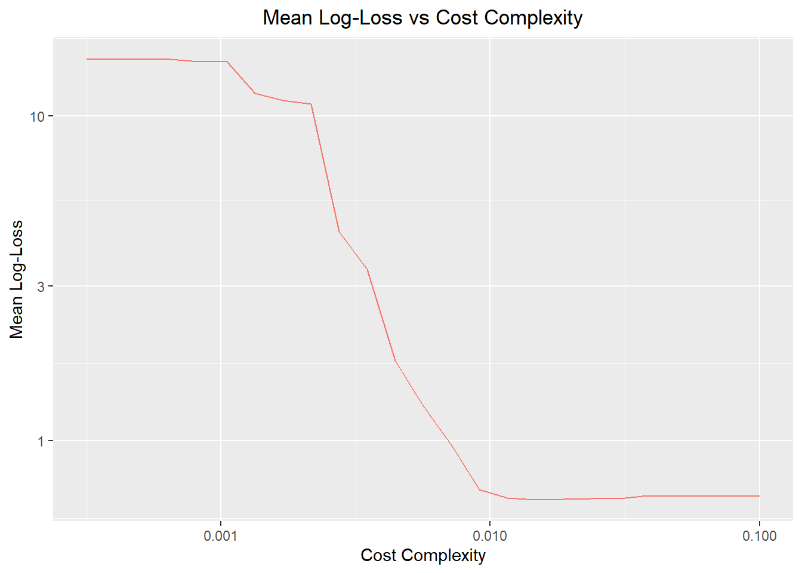
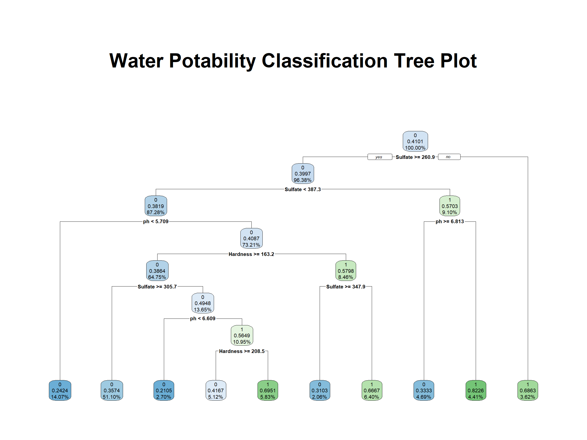
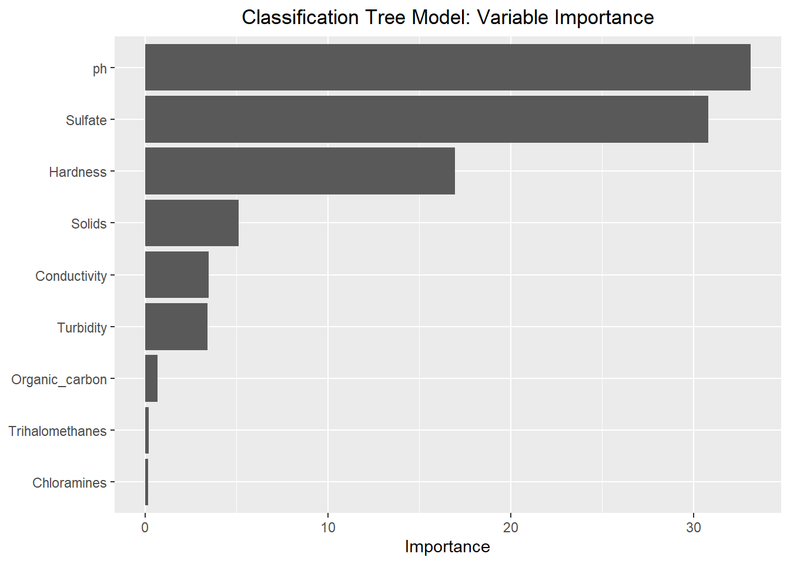
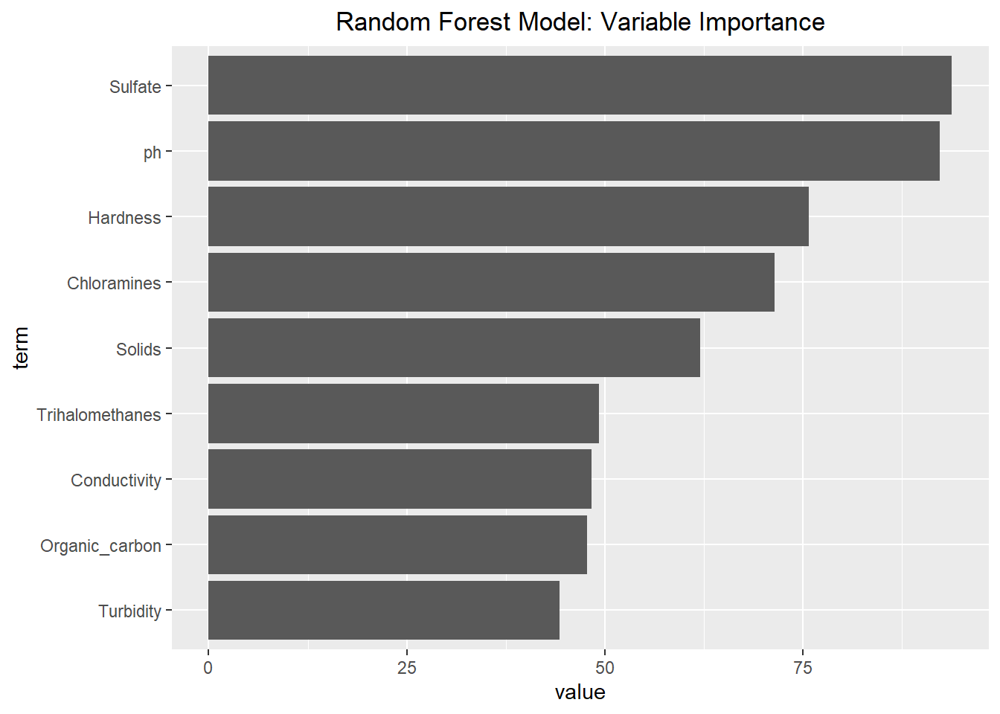

library(tidyverse)
library(knitr)
library(gt)
library(tidymodels)Modeling
1. Introduction
This document continues from the water potability dataset EDA with the goal of selecting a model the predicts potability from the other variables. Both classification tree and random forest models will be considered. The log-loss metric will be used to select the winning model.
Click here to return to the EDA Page
2. Preparation for Modeling
- Split the data
set.seed(123) # setting a seed for reproducibility
water_data <- read_rds("Data/water_clean.rds") # read cleaned water data from the .rds file
water_split <- initial_split(water_data, prop = 0.7) # 70% training data, 30% test data
water_train <- training(water_split)
water_test <- testing(water_split)
water_5_fold <- vfold_cv(water_train, 5, strata = Potability) # set 5-fold cross validation; stratify so that each fold has both levels of Potability well represented- Define the recipe
Note: Normalization of numeric variables is not required for tree based models
water_rec <- recipe(Potability ~ ., data = water_train)
water_rec── Recipe ──────────────────────────────────────────────────────────────────────── Inputs Number of variables by roleoutcome: 1
predictor: 93. Classification Tree Model
- Classification tree model description
Classification tree models work by splitting the predictor space into regions. Each split is determined by an algorithm that selects a predictor and threshold value to optimize the success of predictions. The resulting tree regions each provide a prediction of the response output.
Without restrictions in place, splitting will continue until the tree perfectly classifies the training data. However this represents an over-fit of the model and does not generalize well. Tuning parameters that place restrictions/penalties on the growth of the tree (such as tree depth, minimum node size, and cost-complexity) are implemented to prevent over-fitting.
One significant advantage of the classification tree model is that the output of the fit is very easy to interpret. Additionally, the classification tree inherently accommodates interactions and non-linear relationships.
The main disadvantage of the classification tree model is that it is unstable. Small changes in the data can cause profound changes in the resulting tree. Furthermore, cross-validation is necessary to select the tuning variables and determine the optimal tree size.
- Specify the model
ClassTree_spec <- decision_tree(tree_depth = 30, # set tree depth at 30 (default value)
min_n = 2, # set minimum node size at 2 (default value)
cost_complexity = tune()) |> # tune cost complexity parameter
set_engine("rpart") |>
set_mode("classification")Note: tree_depth and min_n are deliberately held fixed at their default values.
- Create the workflow
ClassTree_wkf <- workflow() |>
add_recipe(water_rec) |>
add_model(ClassTree_spec)
ClassTree_wkf══ Workflow ════════════════════════════════════════════════════════════════════
Preprocessor: Recipe
Model: decision_tree()
── Preprocessor ────────────────────────────────────────────────────────────────
0 Recipe Steps
── Model ───────────────────────────────────────────────────────────────────────
Decision Tree Model Specification (classification)
Main Arguments:
cost_complexity = tune()
tree_depth = 30
min_n = 2
Computational engine: rpart - Fit the model for varying values of
cost_complexity
# Fit the model with tune_grid() and grid_regular
ClassTree_grid <- ClassTree_wkf |>
tune_grid(resamples = water_5_fold,
grid = grid_regular(cost_complexity(range = c(-3.5, -1)), levels = 25), # Specifying 25 values from -3.5 to -1 (log scale)
metrics = metric_set(accuracy, mn_log_loss),
save_workflow = TRUE) # Review the metrics of the tuned fits
ClassTree_grid |>
collect_metrics() |>
select(cost_complexity, .metric, mean, std_err) |>
pivot_wider(names_from = .metric,
values_from = c(mean, std_err),
names_glue = "{.metric}_{.value}") |>
select(cost_complexity, starts_with("mn_log_loss"), starts_with("accuracy")) |>
mutate(across(-cost_complexity, round, digits = 4)) |>
gt() |>
tab_header(title = "Log-Loss and Accuracy by Cost Complexity",
subtitle = "Classification Tree Model Tuning")Warning: There was 1 warning in `mutate()`.
ℹ In argument: `across(-cost_complexity, round, digits = 4)`.
Caused by warning:
! The `...` argument of `across()` is deprecated as of dplyr 1.1.0.
Supply arguments directly to `.fns` through an anonymous function instead.
# Previously
across(a:b, mean, na.rm = TRUE)
# Now
across(a:b, \(x) mean(x, na.rm = TRUE))| Log-Loss and Accuracy by Cost Complexity | ||||
| Classification Tree Model Tuning | ||||
| cost_complexity | mn_log_loss_mean | mn_log_loss_std_err | accuracy_mean | accuracy_std_err |
|---|---|---|---|---|
| 0.0003162278 | 14.9608 | 0.4898 | 0.5849 | 0.0136 |
| 0.0004019450 | 14.9608 | 0.4898 | 0.5849 | 0.0136 |
| 0.0005108970 | 14.9608 | 0.4898 | 0.5849 | 0.0136 |
| 0.0006493816 | 14.9608 | 0.4898 | 0.5849 | 0.0136 |
| 0.0008254042 | 14.6869 | 0.5290 | 0.5842 | 0.0134 |
| 0.0010491397 | 14.6628 | 0.5131 | 0.5842 | 0.0134 |
| 0.0013335214 | 11.7236 | 0.4403 | 0.5835 | 0.0110 |
| 0.0016949882 | 11.1530 | 0.5402 | 0.5828 | 0.0124 |
| 0.0021544347 | 10.8553 | 0.7232 | 0.5856 | 0.0130 |
| 0.0027384196 | 4.3929 | 0.3839 | 0.5970 | 0.0122 |
| 0.0034807006 | 3.3637 | 0.4470 | 0.6112 | 0.0106 |
| 0.0044241856 | 1.7671 | 0.2165 | 0.6091 | 0.0147 |
| 0.0056234133 | 1.2802 | 0.2023 | 0.6183 | 0.0121 |
| 0.0071477058 | 0.9717 | 0.1850 | 0.6304 | 0.0163 |
| 0.0090851758 | 0.7089 | 0.0424 | 0.6354 | 0.0139 |
| 0.0115478198 | 0.6672 | 0.0099 | 0.6368 | 0.0113 |
| 0.0146779927 | 0.6599 | 0.0107 | 0.6318 | 0.0138 |
| 0.0186566358 | 0.6611 | 0.0100 | 0.6276 | 0.0109 |
| 0.0237137371 | 0.6628 | 0.0079 | 0.6276 | 0.0077 |
| 0.0301416253 | 0.6646 | 0.0058 | 0.6226 | 0.0058 |
| 0.0383118685 | 0.6791 | 0.0014 | 0.5935 | 0.0033 |
| 0.0486967525 | 0.6769 | 0.0002 | 0.5899 | 0.0005 |
| 0.0618965819 | 0.6769 | 0.0002 | 0.5899 | 0.0005 |
| 0.0786743808 | 0.6769 | 0.0002 | 0.5899 | 0.0005 |
| 0.1000000000 | 0.6769 | 0.0002 | 0.5899 | 0.0005 |
# plot the mean log-loss as a function of cost_complexity
ClassTree_grid |>
collect_metrics() |>
filter(.metric == "mn_log_loss") |>
ggplot(aes(cost_complexity, mean, color = .metric)) +
geom_line() +
scale_x_log10() + # log scale for x
scale_y_log10() + # log scale for y
labs(title = "Mean Log-Loss vs Cost Complexity",
y = "Mean Log-Loss",
x = "Cost Complexity") +
theme(plot.title = element_text(hjust = 0.5), # Centers the title
legend.position = "none") # removes the legend
Note: The fit with the lowest mean log-loss used cost_complexity = 0.0147 and demonstrated mean accuracy of 63.2%. From the EDA, 40.3% of the dataset (NA removed) is potable. Therefore 63.2% represents only a modest improvement over a blind model that chooses non-potable every time (63.2% vs 59.7%).
- Select the best tuned classification tree model and do a last fit
# Select best fit
ClassTree_best <- select_best(ClassTree_grid, metric = "mn_log_loss") # selection based on log-loss metric
ClassTree_best# A tibble: 1 × 2
cost_complexity .config
<dbl> <chr>
1 0.0147 pre0_mod17_post0# Finalize workflow
ClassTree_wkf |>
finalize_workflow(ClassTree_best)══ Workflow ════════════════════════════════════════════════════════════════════
Preprocessor: Recipe
Model: decision_tree()
── Preprocessor ────────────────────────────────────────────────────────────────
0 Recipe Steps
── Model ───────────────────────────────────────────────────────────────────────
Decision Tree Model Specification (classification)
Main Arguments:
cost_complexity = 0.0146779926762207
tree_depth = 30
min_n = 2
Computational engine: rpart # Fit to the entire training set and see the model fit
ClassTree_final <- ClassTree_wkf |>
finalize_workflow(ClassTree_best) |>
fit(water_train)
ClassTree_final══ Workflow [trained] ══════════════════════════════════════════════════════════
Preprocessor: Recipe
Model: decision_tree()
── Preprocessor ────────────────────────────────────────────────────────────────
0 Recipe Steps
── Model ───────────────────────────────────────────────────────────────────────
n= 1407
node), split, n, loss, yval, (yprob)
* denotes terminal node
1) root 1407 577 0 (0.5899076 0.4100924)
2) Sulfate>=260.8913 1356 542 0 (0.6002950 0.3997050)
4) Sulfate< 387.3242 1228 469 0 (0.6180782 0.3819218)
8) ph< 5.709044 198 48 0 (0.7575758 0.2424242) *
9) ph>=5.709044 1030 421 0 (0.5912621 0.4087379)
18) Hardness>=163.1519 911 352 0 (0.6136114 0.3863886)
36) Sulfate>=305.7057 719 257 0 (0.6425591 0.3574409) *
37) Sulfate< 305.7057 192 95 0 (0.5052083 0.4947917)
74) ph< 6.608793 38 8 0 (0.7894737 0.2105263) *
75) ph>=6.608793 154 67 1 (0.4350649 0.5649351)
150) Hardness>=208.4962 72 30 0 (0.5833333 0.4166667) *
151) Hardness< 208.4962 82 25 1 (0.3048780 0.6951220) *
19) Hardness< 163.1519 119 50 1 (0.4201681 0.5798319)
38) Sulfate>=347.9185 29 9 0 (0.6896552 0.3103448) *
39) Sulfate< 347.9185 90 30 1 (0.3333333 0.6666667) *
5) Sulfate>=387.3242 128 55 1 (0.4296875 0.5703125)
10) ph>=6.812511 66 22 0 (0.6666667 0.3333333) *
11) ph< 6.812511 62 11 1 (0.1774194 0.8225806) *
3) Sulfate< 260.8913 51 16 1 (0.3137255 0.6862745) *# last fit
ClassTree_final_fit <- ClassTree_wkf |>
finalize_workflow(ClassTree_best) |>
last_fit(water_split, metrics = metric_set(accuracy, mn_log_loss))# plot of the classification tree
extract_workflow(ClassTree_final_fit) |>
extract_fit_engine() |>
rpart.plot::rpart.plot(roundint = FALSE,
digits = 4,
main = "Water Potability Classification Tree Plot") # rounding to 4 sig figs
Note: The classification tree only splits on Sulfate, ph, and Hardness. This aligns with observations in the EDA. Further discussion of variable importance is included in the model comparison section.
4. Random Forest Model
- Random forest model description
Random forest models expand on classification trees by creating multiple trees and then averaging the results for a final prediction. Bootstrapping (resampling from the data) is used to create the multiple training sets that each tree is fit to.
Additionally, at each split only a random subset of the predictors is eligible for selection. Without this restriction, the same strong predictors would tend to be select for splitting in every tree. Forcing variety can improve the efficacy of averaging all results. The number of eligible predictors per split is a tuning parameter selected through cross-validation.
The random forest model has the potential for improved predictive performance through averaging. However, since there is no single tree to display, this comes at a loss of interpretability.
- Specify the model
RandForest_spec <- rand_forest(mtry = tune()) |> # tune on mtry parameter
set_engine("ranger", importance = "impurity") |> # needed to plot variable importance later
set_mode("classification")- Create the workflow
RandForest_wkf <- workflow() |>
add_recipe(water_rec) |>
add_model(RandForest_spec)
RandForest_wkf══ Workflow ════════════════════════════════════════════════════════════════════
Preprocessor: Recipe
Model: rand_forest()
── Preprocessor ────────────────────────────────────────────────────────────────
0 Recipe Steps
── Model ───────────────────────────────────────────────────────────────────────
Random Forest Model Specification (classification)
Main Arguments:
mtry = tune()
Engine-Specific Arguments:
importance = impurity
Computational engine: ranger - Fit the model for varying values of mtry
# Fit the model with tune_grid()
RandForest_grid <- RandForest_wkf |>
tune_grid(resamples = water_5_fold,
grid = tibble(mtry = 1:9), # tuning 1:9 for mtry
metrics = metric_set(accuracy, mn_log_loss),
save_workflow = TRUE) # Review the metrics of the tuned fits
RandForest_grid |>
collect_metrics() |>
select(mtry, .metric, mean, std_err) |>
pivot_wider(names_from = .metric,
values_from = c(mean, std_err),
names_glue = "{.metric}_{.value}") |>
select(mtry, starts_with("mn_log_loss"), starts_with("accuracy")) |>
mutate(across(-mtry, round, digits = 4)) |>
gt() |>
tab_header(title = "Log-Loss and Accuracy by Mtry",
subtitle = "Random Forest Model Tuning")| Log-Loss and Accuracy by Mtry | ||||
| Random Forest Model Tuning | ||||
| mtry | mn_log_loss_mean | mn_log_loss_std_err | accuracy_mean | accuracy_std_err |
|---|---|---|---|---|
| 1 | 0.6438 | 0.0038 | 0.6361 | 0.0099 |
| 2 | 0.6288 | 0.0044 | 0.6553 | 0.0093 |
| 3 | 0.6239 | 0.0059 | 0.6532 | 0.0059 |
| 4 | 0.6183 | 0.0063 | 0.6574 | 0.0072 |
| 5 | 0.6169 | 0.0073 | 0.6631 | 0.0036 |
| 6 | 0.6160 | 0.0073 | 0.6567 | 0.0057 |
| 7 | 0.6144 | 0.0084 | 0.6645 | 0.0041 |
| 8 | 0.6145 | 0.0094 | 0.6674 | 0.0069 |
| 9 | 0.6131 | 0.0086 | 0.6674 | 0.0051 |
Note: The fit with the lowest mean log-loss used mtry = 9, meaning that all predictors are eligible at each tree split and no subsetting occurs. This reduces a random forest to a bagged tree model. Furthermore, the best fit produced a mean accuracy of 66.7%. From the EDA, 40.3% of the dataset (NA removed) is potable. Therefore 66.7% represents improvement over a blind model that chooses non-potable every time (66.7% vs 59.7%).
- Select the best tuned random forest model and do a last fit
# Select best fit
RandForest_best <- select_best(RandForest_grid, metric = "mn_log_loss") # selection based on log-loss metric
RandForest_best# A tibble: 1 × 2
mtry .config
<int> <chr>
1 9 pre0_mod9_post0# Finalize workflow
RandForest_wkf |>
finalize_workflow(RandForest_best)══ Workflow ════════════════════════════════════════════════════════════════════
Preprocessor: Recipe
Model: rand_forest()
── Preprocessor ────────────────────────────────────────────────────────────────
0 Recipe Steps
── Model ───────────────────────────────────────────────────────────────────────
Random Forest Model Specification (classification)
Main Arguments:
mtry = 9
Engine-Specific Arguments:
importance = impurity
Computational engine: ranger # Fit to the entire training set and see the model fit
RandForest_final <- RandForest_wkf |>
finalize_workflow(RandForest_best) |>
fit(water_train)
RandForest_final══ Workflow [trained] ══════════════════════════════════════════════════════════
Preprocessor: Recipe
Model: rand_forest()
── Preprocessor ────────────────────────────────────────────────────────────────
0 Recipe Steps
── Model ───────────────────────────────────────────────────────────────────────
Ranger result
Call:
ranger::ranger(x = maybe_data_frame(x), y = y, mtry = min_cols(~9L, x), importance = ~"impurity", num.threads = 1, verbose = FALSE, seed = sample.int(10^5, 1), probability = TRUE)
Type: Probability estimation
Number of trees: 500
Sample size: 1407
Number of independent variables: 9
Mtry: 9
Target node size: 10
Variable importance mode: impurity
Splitrule: gini
OOB prediction error (Brier s.): 0.2125803 # last fit
RandForest_final_fit <- RandForest_wkf |>
finalize_workflow(RandForest_best) |>
last_fit(water_split, metrics = metric_set(accuracy, mn_log_loss))Note: Given that the forest model is comprised of 500 trees, it is not feasible to provide a plot.
5. Model Comparison
- Model variable importance comparison
extract_fit_engine(ClassTree_final_fit)$variable.importance |> # grab importance from the final fit
enframe(name = "Variable", value = "Importance") |> # convert to data frame for ggplot
ggplot(aes(Importance, fct_reorder(Variable, Importance))) +
geom_col() +
labs(title = "Classification Tree Model: Variable Importance", y = NULL) +
theme(plot.title = element_text(hjust = 0.5))
RandForest_final_fit |>
extract_fit_engine() |>
ranger::importance() |> # extracts variable importance from a ranger model
enframe(name = "term") |> # converts named vector into a data frame, changing name in to "term"
ggplot(aes(x = reorder(term, value), y = value)) + # sorts order of term by value (to match prior importance plot)
geom_bar(stat ="identity") +
coord_flip() +
labs(title = "Random Forest Model: Variable Importance",
x = "term") + # needs renaming after reorder()
theme(plot.title = element_text(hjust = 0.5)) # center title 
For the classification tree model, three predictors (ph, Sulfate, and Hardness) show substantially higher importance than the rest. These same three predictors also rank highest in the random forest model, though the margin over the other six predictors is much narrower. This is consistent with the EDA where ph, Sulfate, and Hardness were the only predictors whose density plots showed any notable difference between potability and non-potability.
- Model performance comparison
bind_rows(
`Classification Tree` = collect_metrics(ClassTree_final_fit),
`Random Forest` = collect_metrics(RandForest_final_fit),
.id = "Model") |>
filter(.metric %in% c("mn_log_loss", "accuracy")) |> # keeping just log-loss and accuracy
pivot_wider(id_cols = Model, names_from = .metric, values_from = .estimate) |> # pivot to one row per model
gt() |>
tab_header(title = "Final Model Comparison")| Final Model Comparison | ||
| Model | accuracy | mn_log_loss |
|---|---|---|
| Classification Tree | 0.6506623 | 0.6523473 |
| Random Forest | 0.7135762 | 0.5873029 |
The random forest model wins on both metrics, with lower log-loss (0.587 vs 0.652) and higher accuracy (71.4% vs 65.1%). Both models also performed better on the test set than in cross-validation, which is expected since each final model is fit to the entire training set. A blind model predicting non-potable every time would be correct 59.7% of the time, so the random forest model is a clear improvement while the classification tree model gains very little.
The random forest model is the winner!